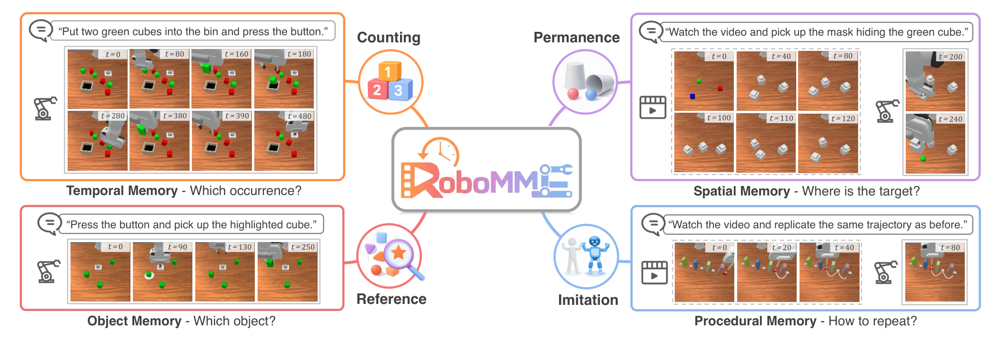
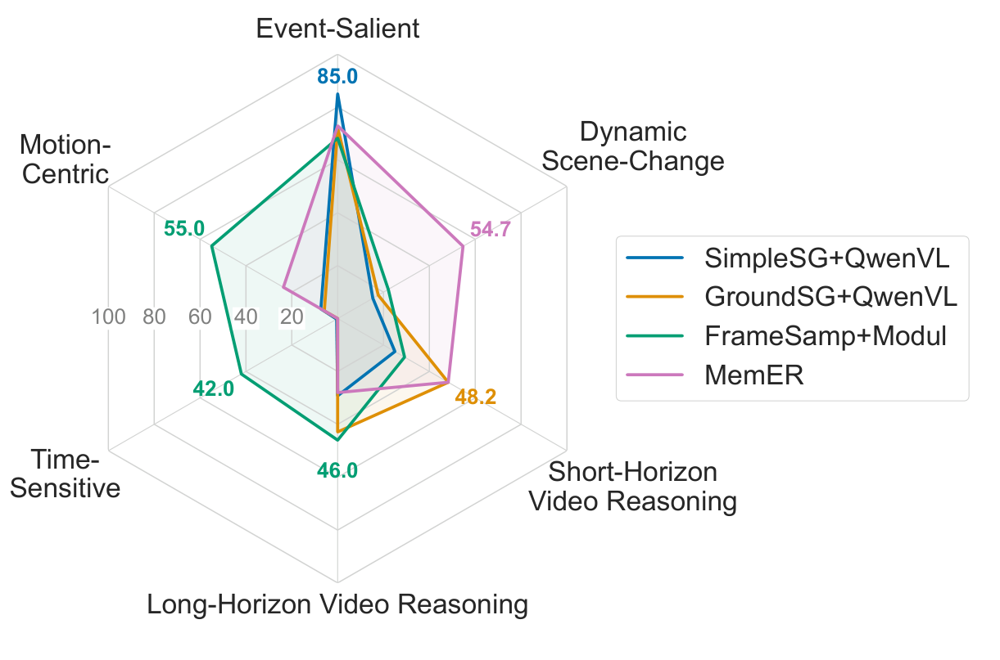
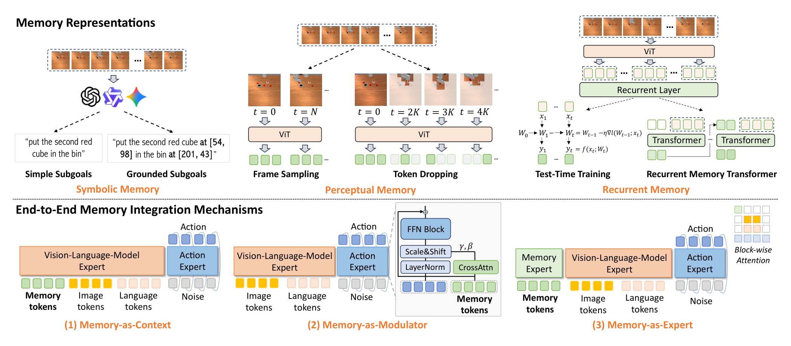

能拿到的是一把尺子，而不是一个方法：16 个显式非马尔可夫任务，把「记忆表征」与「接入动作通路的方式」拆成两个正交因子，在同一 \(\pi_{0.5}\)、同一数据、同一 512 token 预算下量出 14 个变体。结论是没有任何一种设计通吃——最好的非 oracle 变体 FrameSamp+Modul 只有 44.51%，而人类在同一协议下有 90.50%。
- 最小可复用件
- 四维记忆分类法 + 16 任务协议（含「错一个物体立即终止」的二值成功判据）+ 「同 backbone / 同示教 / 同记忆预算」的对照表，以及 FrameSamp+Modul 这条强基线。
- 主要风险
- 把 44.51% 当成方法上限或把「感知记忆最好」当成普适结论：全部结论只建立在单一 \(\pi_{0.5}\) 骨干、纯仿真桌面、16 个任务上；Permanence 套件所有学习型变体都低于 27%。
- 复现门槛
- ManiSkill + 1,600 条示教 / 770k 步（论文给出完整任务配置与训练超参，代码见附录 B.2.3 的链接）；每个变体 80k 步，4×A40 约 3–4 天，RMT 变体 2×H100 约 2–3 天；符号变体另需 Qwen3-VL-4B 子目标模型。
1 核心摘要
记忆在长时程操作里是刚需：擦桌子要数擦了几遍，找杯子要记得刚才哪个盖子下面藏着红块，学折衣服要复现人演示的手法。但 2025–2026 年的记忆增强 VLA 各自在自己的任务、自己的骨干、自己的评测协议上报告增益，导致一个很基本的问题没法回答——到底是哪种记忆表征在起作用，还是只是换了个更大的模型、喂了更多数据。论文的判断很直接：现有 benchmark 要么根本不强制记忆（只以当前观测为条件就能拿高分），要么任务太少、太短、示教不足。
RoboMME 的做法分三层。第一层是任务：按认知科学把记忆分成时间（when）、空间（where）、物体（what）、程序（how）四维，对应 Counting / Permanence / Reference / Imitation 四个套件、每套 4 个任务，共 16 个任务、1,600 条示教、770k 步（平均 481 步/条，最长 VideoPlaceOrder 平均 1,134 步）。所有任务都刻意构造成非马尔可夫：当前观测相同、历史不同时，正确动作不同。第二层是变体矩阵：在 3.2B 的 \(\pi_{0.5}\) 上实现 3 种记忆表征（符号 / 感知 / 循环）× 3 种接入方式（memory-as-context / modulator / expert），得到 14 个受控变体，记忆预算统一为 512 token。第三层是协议：每任务 50 个 episode（共 800 个）、环境种子与训练集分离、最长 1,300 步、结果取最后 3 个 checkpoint × 3 个随机种子（9 次运行）平均；另设人类 VideoQA + oracle planner 上界。
结果是一个整齐的否定式结论：没有一种表征或接入方式在所有任务上占优。感知记忆整体最强（FrameSamp+Modul 44.51%），符号记忆在计数与事件显著任务上更强（GroundSG+QwenVL 在 Event-Salient 组 72.08%，SimpleSG+QwenVL 84.96%），循环记忆最弱（最好的 TTT+Expert 22.35%，RMT+Expert 18.05% 与无记忆的 \(\pi_{0.5}\) 的 17.93% 几乎无差别）。同任务下符号记忆的 oracle 上界高达 84.08%（Permanence 93.31%、Reference 95.17%），说明很多失败不是「语言表达不了」，而是子目标预测器的 grounding 质量不够。
判定：这是目前唯一一份把「记忆表征 × 接入方式」做成受控矩阵的公开评测，适合当选型基准和消融模板；它不是一个可以直接部署的记忆模块，也不足以支撑「某类表征普遍更好」的强结论——因为 backbone 只有一个、场景只有桌面仿真、任务只有 16 个。
2 记忆环节定位
它主占评测格：不提出新的写入规则，而是把「记忆存成什么」和「怎么送进动作预测」定义成一个可比较的设计空间。之所以在「记忆表征」「索引检索」「动作接口」三格标部分命中，是因为它为了让矩阵可跑，必须把这三格各自固定成若干可复现的实现——符号子目标、帧采样/ token 丢弃、TTT/RMT、以及 AdaLN 调制与 block-wise 专家注意力。换句话说，它评测的是这三格的设计选择，而不是提出其中某一格的新算法。
| 维度 | RoboMME 的定义 |
|---|---|
| 记忆单位 | 统一为 \(B = 512\) 个 token 的接口 \(M_t \in \mathbb{R}^{B \times d}\)：符号记忆是子目标文本 token；感知记忆是被选中的 SigLIP2 视觉 token（FrameSamp 为 32 帧 × 4×4=16 token/帧，TokenDrop 为跨时间 top-512 个 8×8 池化 patch）；循环记忆是 512 个记忆槽（RMT）或 512×512 快速权重（TTT）输出的 512 个 token。不足补零。 |
| 写入频率 | 逐决策步更新。符号记忆每步由外部 VLM 依据当前图像与已有子目标序列生成下一句；感知记忆每次从当前时刻之前的历史里均匀采样 32 帧（FrameSamp）或按 RGB 差挑选 top-512 个 patch（TokenDrop），本身不维护可写状态；循环记忆维护累计缓冲，每 \(K = 16\) 个执行步追加一帧、只保留最近 64 帧，并在每个采样时刻沿 64 帧顺序更新状态。感知分支在推理期如何推进历史窗口，论文未单独说明。 |
| 读取条件 | 每个动作 chunk 的去噪查询都读一次：context 方式把记忆拼进 VLM 输入序列；modulator 方式让动作特征 cross-attend 记忆后产生 \(\gamma , \beta\)；expert 方式由动作专家对 VLM 与记忆两个专家做非对称注意力。执行时一次预测 20 步、只执行前 16 步。 |
| 交给下游 | flow-matching 动作专家（\(\pi_{0.5}\) 原生），输出 20 步动作 chunk；不改变动作空间（joint 8D 或 EEF 7D），也不引入外部 planner（SAM2Act+ 才用 planner）。 |
| 在线性 | 记忆只由 \(\tau \le t\) 的观测/动作构成，不使用未来帧，不使用 oracle 状态（oracle 只出现在「子目标来源」这一诊断条件里，且被单独标注）。但要注意：Imitation 套件与所有 Video* 任务在 \(t=0\) 一次性给出一段历史/示教视频作为初始观测，这是协议允许的初始条件，却不是严格流式输入；其余任务每步只给当前帧。 |
对读者最重要的一点是：这个 benchmark 把「记忆」拆成了两个可以独立变化的因子，而不是把某个方法当成一个整体去排名。表征因子回答「历史压缩成什么」（语言、视觉 token、隐状态），接入因子回答「压缩后的东西从哪条通路进动作头」（拼进上下文、调制动作特征、独立专家）。14 个变体就是这两因子的笛卡尔积减去不可组合的格子：符号记忆本身是语言 token，天然只能走 context，所以 2 个符号策略不再乘接入方式（子目标源作为输入条件另列，在主表里展开成 6 行）；感知与循环各 2 种实现 × 3 种接入 = 12 个。2 + 12 = 14。
3 问题与动机
论文对现有评测的批评不是「不够难」，而是三种具体的失效模式。
失效模式一：任务可以被当前观测解掉。大多数操作 benchmark（RLBench、CALVIN、LIBERO、VLABench、RoboCerebra）虽然在长时程和组合性上很强，但决策通常能从即时观测推出——物体状态在执行中持续更新，智能体不需要回看历史就能决定下一个子任务。论文在 Table 2 里给这些基准的「非马尔可夫」一栏全部打了叉。这造成一个后果：在这些基准上比较记忆模块，增益很容易来自模型容量或数据，而不是记忆。
失效模式二：真正要求记忆的基准太小、太短、示教太少。MemoryBench 是第一个显式评空间记忆的基准，但只有 3 个任务、300 条示教、平均 312 步，且接近被解掉；MIKASA-Robo 有 12 个任务、1,250 条示教，但平均只有 72 步，原本是为强化学习设计的，缺少足够高质量示教来支撑 VLA 的模仿学习，Table 2 里视频条件、语言指令、子目标、关键帧四栏也均为叉。两者都不足以区分「记住了」和「碰巧对了」。
失效模式三：方法之间不可比。符号记忆（HistRISE 的点跟踪、UniVLA 的过去动作、MemER/Gemini-Robotics/MEM 的语言子目标）、感知记忆（ContextVLA 的多帧 token、MemoryVLA/SAM2Act 的 memory bank）、循环记忆（BC-RNN、MITL、RoboMamba）跑在不同骨干、不同任务、不同训练预算上。于是「哪种记忆更好」这个问题在文献层面无法回答。
| 基准 | 非马尔可夫 | 部分观测 | 动态场景 | 视频条件 | 语言指令 | 记忆类型 | 任务数 | 示教数 | 平均步长 |
|---|---|---|---|---|---|---|---|---|---|
| RLBench18 | ✗ | ✗ | ✗ | ✗ | ✓ | T | 18 | 1,800 | 137 |
| CALVIN | ✗ | ✗ | ✗ | ✗ | ✓ | T | 34 | 1,000 | 584 |
| LIBERO | ✗ | ✗ | ✗ | ✗ | ✓ | T | 130 | 6,500 | 162 |
| RoboCerebra | ✗ | ✗ | ✓ | ✗ | ✓ | T | 100 | 1,000 | 2,972 |
| MemoryBench | ✓ | ✗ | ✗ | ✗ | ✓ | T+S | 3 | 300 | 312 |
| MIKASA-Robo (VLA) | ✓ | ✓ | ✓ | ✗ | ✗ | T+S+O | 12 | 1,250 | 72 |
| RoboMME | ✓ | ✓ | ✓ | ✓ | ✓ | T+S+O+P | 16 | 1,600 | 481 |
Table 2：比较 RoboMME 与其他机器人基准的任务步长和历史依赖属性；✓/✗ 表示表内属性是否具备。
所以它的动机可以概括成一句：把「记忆」从方法内部的一个模块，提升为评测里一个必须被单独控制的自变量。这与 MIKASA-Robo 的路线相近（同样是自己造任务、自己给协议），区别在于 RoboMME 明确要求「同一骨干、同一示教、同一记忆预算」，并且把语言子目标与视频条件输入都纳入协议。
4 方法拆解
作为基准类工作，这里拆的不是网络结构，而是「任务如何保证必须用记忆」「14 个变体如何做到只差一个因子」「评测口径如何保证可比」这三件事。
4.1 任务协议：四个套件如何强制历史依赖
全部任务建在 ManiSkill 上，7-DOF Franka Panda，桌面场景；前后两个 256×256 RGB 视角，动作空间为 8D 关节（7 关节 + 夹爪）或 7D EEF（3 位置 + 欧拉角 + 夹爪）。示教通过回放预定义关键帧航点生成，再记录成稠密轨迹；为增加行为多样性（尤其是失败恢复），在关键帧航点上加 5% 噪声后再回到正常轨迹。每条轨迹按场景杂乱度、时程、动态性分为 easy / medium / hard 三档；规划器失败的经历被丢弃，只保留成功轨迹用于训练、只保留环境种子用于评测。
四类记忆的划分对应四个认知维度，每个套件四个任务，平均步数从 208 到 1,134 不等：
| 套件 | 任务 | 记忆类型 | 平均步数 | 任务挑战 | 当前帧看不到、必须记住的信息（本页归纳） |
|---|---|---|---|---|---|
| Counting（时间） | BinFill | T | 604 | 计数 | 各颜色已放入几个；桶是不透明黑内壁，无法靠看一眼桶内纠正；streaming 模式下立方体陆续出现 |
| Counting | PickXTimes | T | 538 | 计数 | 已完成的 pick-and-place 次数 |
| Counting | SwingXTimes | T | 435 | 计数 + 摆动 | 已在两个目标间往返了几个周期 |
| Counting | StopCube | T | 317 | 计数 + 时间敏感 | 移动立方体第几次经过目标，以及当前处于哪一段行程 |
| Permanence（空间） | VideoUnmask | S | 217 | 遮挡 | 视频阶段哪个容器下是目标颜色 |
| Permanence | ButtonUnmask | S | 267 | 遮挡 | 按键期间容器被摆上桌的过程与结果 |
| Permanence | VideoUnmaskSwap | S | 348 | 遮挡 + 跟踪 | 容器交换位置后的身份对应关系 |
| Permanence | ButtonUnmaskSwap | S | 400 | 遮挡 + 跟踪 | 按键期间「放置 + 交换」两步之后的目标容器 |
| Reference（物体） | PickHighlight | O | 346 | 视觉指代 | 短暂高亮过哪些立方体（高亮随后消失） |
| Reference | VideoRepick | O + T | 687 | 动作指代 + 跟踪 + 计数 | 视频里被抓的是哪一个实例（同色干扰），以及已重复几次 |
| Reference | VideoPlaceButton | O + T | 974 | 语言指代 + 长视频 | 「按钮按下之前/之后」对应的目标位置 |
| Reference | VideoPlaceOrder | O + T | 1,134 | 语言指代 + 长视频 | 「第 k 个目标」的序数所指 |
| Imitation（程序） | MoveCube | P | 394 | 接触方式 + 工具使用 | 示教用的是钩、推、还是抓放 |
| Imitation | InsertPeg | P + O | 479 | 精密运动 | 哪一个钉子、抓头还是抓尾、从左还是从右插入 |
| Imitation | PatternLock | P | 208 | 直线运动 | 目标网格的访问顺序 |
| Imitation | RouteStick | P | 370 | 圆周运动 | 绕开障碍的路径顺序（hard 档还要求回退） |
Table 1：列出 RoboMME 任务、对应记忆类型、平均步数及主要挑战。
「强制记忆」靠的不是难度，而是判据设计。以 BinFill 为例：桶内壁是黑色的，看不见已放入多少；成功要求「每种指定颜色恰好放够数量之后才按按钮」；多放一个、少放一个、提前按，都算失败，且超出数量会立即终止 episode。PickXTimes 同样规定抓错物体、提前按按钮、多做一次重复都是立即失败。这种「二值 + 即时失败」的判据意味着不存在部分分，模型必须真的维持一个计数器，而不是靠当前帧的物体布局去猜。Permanence 系列则把关键信息放在执行前或执行中的遮挡窗口里：容器摆上桌、交换位置的过程只发生一次，之后当前帧里几个容器外观完全一致。
Reference 与 Imitation 套件同样采用「错了就立即终止」：PickHighlight 抓了未被高亮的方块、VideoRepick 抓错实例或多做/少做一次、VideoPlaceButton 与 VideoPlaceOrder 放错目标，都会提前结束；MoveCube 一旦用了与示教不同的操作方式（该推却抓、该用钩却直接抓）即失败，InsertPeg 抓错钉、抓错端、插错侧均失败，PatternLock 偏离演示顺序即失败，RouteStick 未按演示路径绕过障碍即失败。换句话说，每个任务只有一个「对」的轨迹族，判据不奖励「接近」。
四类任务的隐藏信息也解释了为什么它们不能被同一种记忆解决：Counting 需要的是离散事件计数（一个很小的标量状态），Permanence 需要的是物体身份与空间位置的绑定（实例级跟踪），Reference 需要的是把语言里的时间/序数指代锚定到某个历史时刻，Imitation 需要的是一整段连续运动的轨迹形状（低频、长时、连续）。前三者可以压成符号，第四者压成符号会丢掉运动细节——但这不等于「符号记忆做不了 Imitation」：用 Oracle 子目标时 GroundSG 在 Imitation 上仍有 63.98%，换成 QwenVL 生成的子目标就掉到 21.89%。瓶颈是子目标能否稳定描述运动，而不是符号这种形式本身。
4.2 十四个变体：三表征 × 三接入的正交矩阵
所有变体共享 \(\pi_{0.5}\) 骨干（3.2B 参数，VLM 专家 + 动作专家，blockwise causal attention，flow-matching 动作头）。观测 token 为 576 个（两视角 512 视觉 + 64 语言），加上记忆后：符号变体把语言预算扩到 512，总输入 1,024 token；context 变体把 512 个记忆 token 直接拼上，总输入 1,088 token；modulator 与 expert 不增加输入序列长度。
三种表征。符号记忆用外部 VLM 逐步生成子目标，拼进指令位置（Task: {goal}\nCurrent Subgoal: {subgoal}\nAction:），分 simple 与 grounded 两种（后者带前视图像素坐标，如 pick up the green cube at [63, 152]）。感知记忆把历史帧用 SigLIP2 编码后做空间池化再选 token：FrameSamp 把每帧池到 4×4=16 token、均匀采样 32 帧；TokenDrop 用更细的 8×8 网格、以 \(K=8\) 的时间步长比较同 patch 的平均 RGB 差（阈值 \(10^-4\)），跨所有时刻保留 top-512，并给每个 token 加 M-RoPE 三维位置（时间、高、宽），首帧 token 全保留。循环记忆把 64 帧历史（每帧 8×8=64 token）顺序压进 512 个槽：RMT 用 512 个可学习 query 做 grouped-query cross-attention（8 头 / 1 个 KV 头）；TTT 用 512×512 快速权重，两个 TTT 头，学习率 \(\eta =0.01\)，梯度裁剪 5.0。
三种接入。context 是把记忆当额外上下文：\(u_t = E_{\mathrm{vlm}}([M_t; o_t; l])\)，零新增参数，但会拉长序列并与原观测 token 竞争注意力。modulator 是把记忆压成调制信号：动作特征先 cross-attend 记忆得到 \(r_t\)，再经 MLP 产生 \(\gamma _t, \beta _t\) 做 AdaLN，MLP_mod 初始化成 \(\gamma =1, \beta =0\)（fine-tune 起点等价于原模型），约 +80M 参数。expert 是加一个 18 层、宽 1,024、MLP 2,048 的独立记忆专家，三专家按 blockwise 因果注意力交互——动作专家能看到 VLM 与记忆，VLM 与记忆彼此不看，约 +190M 参数。记忆模块本身（特征投影 + RMT/TTT）总开销小于 10M。
为什么是这 14 个。符号记忆产出的是语言 token，只能走 context，所以两个符号策略（SimpleSG、GroundSG）不再乘 3，但各自要配 3 种子目标来源（Gemini-2.5-Pro 纯 prompt、Qwen3-VL-4B LoRA 微调、仿真真值 Oracle），于是主表里出现 6 行。感知 2 种选帧策略 × 3 种接入 = 6；循环 2 种压缩方式 × 3 种接入 = 6。设计数是 2 + 6 + 6 = 14，评测行数是 6 + 6 + 6 = 18。读论文时这两个数字经常被混淆，本页按「设计 14、行 18」理解。
4.3 训练与评测口径：控制变量到底控住了什么
控制得相当紧：全部变体 80k 步、AdamW（\(\beta=0.9\)/0.95，weight decay 0）、常数学习率 \(5 \times 10^{-5}\)、warmup 10k、EMA 0.999、梯度裁剪 1.0；冻结 SigLIP2、预计算并缓存视觉 token，只训练 VLM 专家、动作专家与记忆引入的参数；动作 chunk 20 步，评测执行前 16 步；统一 joint 动作空间、不使用本体感知（论文说试过，无稳定收益）。唯一的例外是循环变体因显存把 batch 从 64 降到 16——这是一个应该被记住的混淆项：循环记忆的差成绩里，有一部分可能来自有效 batch 更小。
评测：每任务 50 个 episode，共 800 个，环境种子与训练不同，单 episode 最长 1,300 步；每个 MME-VLA 变体取最后 3 个 checkpoint × 3 个随机种子共 9 次运行的平均，先验方法（SAM2Act+、MemER）取 3 次运行。记忆预算统一 512 token，并额外做 64–1024 的预算扫描。效率用单次前向的 TFLOPs × 平均 episode 长度估算。
4.4 标注、子目标来源与人类上界
数据自带关键帧航点与语言子目标标注（Table 2 的 Subgoal / Keyframe 两列）。子目标预测器统一用 Qwen3-VL-4B-Instruct 做 LoRA 微调：batch 48、warmup 5%、lr \(1 \times 10^{-4}\)、2 epoch、LoRA rank 16 / alpha 32、DeepSpeed ZeRO-2；Gemini-2.5-Pro 只做 prompt engineering，不做任务微调。这个设计很关键：它把「记忆质量」与「语言模型质量」拆开——Oracle 行告诉你这类记忆的表达上界，Gemini 行告诉你域偏移下的下限，QwenVL 行才是可部署的现实值。
人类上界不是直接遥操作，而是把任务重构成在线 VideoQA：视频片段逐步揭示，人从预定义候选动作集里点选下一个高层动作并给出 grounding 坐标，再由 oracle planner 保证底层运动一定成功。18 名参与者完成 800 个 episode，平均 90.50%。同样的协议下，纯 prompt 的 Gemini-2.5-Pro 只有 47.88%，GPT-4o 30.63%，Qwen3-VL-32B 27.88%——说明这些视频基础模型在把「看懂」转成「按顺序决策」上仍有明显域差距。
5 证据与实验
5.1 十四个变体的主结果
Table 12：比较 14 个设计（18 个评测行）在四类套件上的平均成功率（%），± 为标准差；最后一列为总平均。
| # | 表征 | 变体 | 接入 / 子目标源 | Counting | Permanence | Reference | Imitation | AVG |
|---|---|---|---|---|---|---|---|---|
| 符号记忆（2 个设计，每个 3 种子目标源） | ||||||||
| S1 | Symbolic | SimpleSG | Oracle | 82.56 | 21.56 | 32.28 | 61.94 | 49.58 ± 1.33 |
| S1 | Symbolic | SimpleSG | QwenVL | 44.61 | 19.61 | 25.22 | 26.56 | 29.00 ± 0.39 |
| S1 | Symbolic | SimpleSG | Gemini | 39.00 | 13.50 | 22.50 | 18.00 | 23.25 ± 0.35 |
| S2 | Symbolic | GroundSG | Oracle | 83.86 | 93.31 | 95.17 | 63.98 | 84.08 ± 1.86 |
| S2 | Symbolic | GroundSG | QwenVL | 38.00 | 39.34 | 31.56 | 21.89 | 32.70 ± 0.61 |
| S2 | Symbolic | GroundSG | Gemini | 12.75 | 15.75 | 11.25 | 6.50 | 11.56 ± 0.97 |
| 感知记忆（6 个设计） | ||||||||
| P1 | Perceptual | TokenDrop | Context | 57.89 | 26.89 | 23.72 | 29.43 | 34.50 ± 0.89 |
| P2 | Perceptual | TokenDrop | Modul | 52.33 | 26.83 | 34.72 | 38.28 | 38.04 ± 0.82 |
| P3 | Perceptual | TokenDrop | Expert | 59.44 | 23.61 | 25.33 | 31.06 | 34.86 ± 0.93 |
| P4 | Perceptual | FrameSamp | Context | 50.14 | 23.31 | 20.95 | 28.33 | 30.68 ± 1.17 |
| P5 | Perceptual | FrameSamp | Modul | 65.22 | 25.11 | 36.33 | 51.39 | 44.51 ± 0.77 |
| P6 | Perceptual | FrameSamp | Expert | 66.78 | 25.17 | 24.11 | 28.94 | 36.25 ± 0.68 |
| 循环记忆（6 个设计） | ||||||||
| R1 | Recurrent | TTT | Context | 36.06 | 21.39 | 22.00 | 9.67 | 22.28 ± 1.57 |
| R2 | Recurrent | TTT | Modul | 34.53 | 22.17 | 20.42 | 10.72 | 21.96 ± 2.39 |
| R3 | Recurrent | TTT | Expert | 36.00 | 22.95 | 19.67 | 10.78 | 22.35 ± 1.74 |
| R4 | Recurrent | RMT | Context | 32.17 | 15.39 | 19.72 | 10.56 | 19.46 ± 2.73 |
| R5 | Recurrent | RMT | Modul | 34.14 | 15.78 | 21.11 | 9.67 | 20.17 ± 1.27 |
| R6 | Recurrent | RMT | Expert | 34.39 | 15.72 | 14.34 | 7.75 | 18.05 ± 1.66 |
| 外部对照 | ||||||||
| — | 无记忆 | \(\pi_{0.5}\) | — | 28.78 | 17.00 | 17.17 | 8.78 | 17.93 ± 0.61 |
| — | 感知库 | SAM2Act+ | memory bank + planner | 35.33 | 26.00 | 16.83 | 7.33 | 21.37 ± 1.82 |
| — | 混合 | MemER | 关键帧 + 符号子目标 | 48.83 | 53.17 | 38.00 | 29.50 | 42.38 ± 0.33 |
| — | 人类 | VideoQA + oracle planner | — | 88.50 | 91.00 | 93.00 | 89.50 | 90.50 |
Table 12 / Table 3：比较记忆设计和人类基线在四类套件上的平均成功率（%）；S1/S2 表示不同子目标输入。
5.2 五个可复用的读表结论
（1）表征维度：感知 > 符号（可用版）> 循环。最好的感知变体 44.51%，最好的可部署符号变体（QwenVL）32.70%，最好的循环变体 22.35%。循环的两个实现都只比无记忆的 17.93% 高一点点，RMT+Expert 的 18.05% 基本等于没学到记忆。论文的解释是：在 \(\pi_{0.5}\) 上接浅层循环模块做微调会导致训练不稳定，有效的 recurrence 需要更深的架构整合与面向循环的预训练——这是一个方法学判断，本页认为它比「循环记忆不行」更准确。
（2）接入维度：modulator 对感知记忆最稳。同一个 TokenDrop，Context 34.50 / Modul 38.04 / Expert 34.86；同一个 FrameSamp，Context 30.68 / Modul 44.51 / Expert 36.25。论文的归因是 modulator 只在动作通路上做特征级调制，最大程度保留了 \(\pi_{0.5}\) 预训练表征，而 context 拉长序列、expert 引入 190M 新参数，都可能扰动已学到的视觉-语言对齐。这个解释与「context 的 FrameSamp 反而最差（30.68）」是一致的：把 512 个历史视觉 token 直接拼进 VLM，干扰最大。
（3）选帧策略：保留全局时空结构比保留局部变化更重要。FrameSamp+Modul 44.51 vs TokenDrop+Modul 38.04。论文说 token dropping 的激进剪枝会去掉全局空间上下文，在 StopCube 这类需要判断物体距离的任务上尤其吃亏（42.00 vs 5.33，差 8 倍）。反过来 TokenDrop 在 Counting 上并不差（52.33 vs 65.22，仍落后），说明「事件级变化」和「空间布局」是两种不同的信息，帧采样恰好同时保留了两者。
（4）符号记忆的价值在「事件显著 + 短时程」，且高度依赖 grounding。GroundSG 相对 SimpleSG 在 QwenVL 下从 29.00 提到 32.70，增益来自 Permanence（19.61 → 39.34）与 Reference（25.22 → 31.56），代价是 Counting 降 6.6 个点（44.61 → 38.00）、Imitation 降 4.7 个点（26.56 → 21.89）；而在 PickXTimes 上 SimpleSG 反而略高（95.33 vs 92.67），论文归因于 QwenVL 的 grounding 误差在简单任务上引入了噪声。Oracle 上界（84.08%）与 QwenVL 现实值（32.70%）之间约 51 个百分点的差距，是这份基准给出的最重要的工程信号：符号记忆的瓶颈不在语言表达力，而在子目标预测器能否稳定产出正确的像素级指代。
（5）空间记忆（Permanence）是全线未解项。除 Oracle（93.31）外，所有学习型变体都落在 15–27%：最好的 TokenDrop+Context 26.89，FrameSamp+Modul 25.11。而 MemER 靠「保留关键帧图像 + 语言子目标」的混合设计拿到 53.17，是这一套件上唯一明显超过 30% 的方法。这条对比比总平均更能说明问题：空间记忆需要的可能不是更好的压缩，而是不压缩——保留少量原始帧，让模型在需要时自己回看。

Figure 1：四个面板分别展示 Counting、Permanence、Reference、Imitation 的指令与带时间戳的关键帧。
5.3 按功能需求重分组：认知维度不等于实现维度
论文做了一个很重要的自我修正：四类认知记忆与三种实现并不是一一对应的。没有一个方法能解掉整个套件，于是它把 16 个任务按「功能需求」重分成六组——Motion-Centric（PatternLock、RouteStick、SwingXtimes、InsertPeg）、Time-Sensitive（StopCube）、Short-Horizon Video Reasoning（VideoUnmask、VideoRepick、VideoUnmaskSwap）、Long-Horizon Video Reasoning（VideoPlaceButton、VideoPlaceOrder）、Dynamic Scene-Change（ButtonUnmask、ButtonUnmaskSwap、PickHighlight）、Event-Salient（PickXtimes、BinFill、MoveCube）。

Figure 3：六类功能需求上的曲线比较 SimpleSG、GroundSG、FrameSamp 与 MemER；各轴表示对应任务组成功率（%）。
这组数字比套件均值更有决策价值：FrameSamp+Modul 在 Motion-Centric 上 54.95、Long-Horizon 46.00、Time-Sensitive 42.00，说明「保留一段连续视觉历史」对运动类与长视频类任务是有效的；MemER 在 Dynamic Scene-Change 上 54.67，说明「保留关键帧」对执行期场景持续变化的任务更有效；而 GroundSG+QwenVL 在 Motion-Centric 只有 5.83、Time-Sensitive 为 0.00——符号记忆几乎无法承载连续运动。反过来，SimpleSG+QwenVL 在 Event-Salient 上 84.96，是全部非 oracle 方法里最高的一项，说明当任务进展由「视觉上显著、离散的事件」标记时，一句子目标就是最划算的记忆。
5.4 记忆预算、效率与注意力：增益从哪里来
预算。记忆 token 从 64 增到 1,024 时，FrameSamp+Modul 从 30.42% 升到 45.87%，TokenDrop+Modul 从 18.11% 升到 40.17%；512 之后增益明显变小，所以主实验取 512 作为性能/成本折中。这说明两件事：历史信息确实被用上了（否则加预算不会涨），以及 512 不是理论上限而是工程选择。
效率。按单次前向 TFLOPs × 平均 episode 长度估算，\(\pi_{0.5}\) 为 3.75，GroundSG+QwenVL 约 10.15（论文说约 3×），MemER 约 15.37（约 5×），而 FrameSamp+Modul 落在 6.25–6.27 区间（约 1.7×，随记忆预算略增）。感知记忆的额外开销最小，因为大部分计算本来就在处理视觉 token，记忆接入本身很轻。这解释了为什么「感知 + modulator」在性价比上胜出：它不需要每步调用一个 4B 的 VLM 去生成子目标。
注意力。在 context 与 expert 两种接入下，记忆 token 分到的平均注意力只有 0.7%–4.8%，远低于观测（45%–60%）与语言（38%–53%）；但表现更好的变体往往有更高的峰值记忆注意力（FrameSamp+Expert 的最大值为 21.8%，同时是该组成功率最高的 36.25%）。论文的解读是「记忆的使用是稀疏但关键的」：大多数低层动作靠当前帧就够，记忆只在需要消歧的决策点起作用。对系统设计的启示是——不要用平均注意力去判断记忆模块是否有效，要看峰值与决策点。
调制的稳定性。FrameSamp+Modul 的调制参数尺度为 3.74 ± 22.55，TokenDrop+Modul 为 5.99 ± 38.67；成功率更高的前者反而方差更小。论文据此认为「稳定的小幅调制」优于「剧烈调制」。这只是一个相关性观察（两个变体、两个数字），本页不建议把它当成因果结论。
5.5 真机与跨骨干：结论迁移到哪一步为止
真机部分用 7-DOF Franka + UMI 指尖、三路 RealSense（左右肩 D435 + 腕部 D405），遥操作采集 350 条示教 / 78,400 步，四个任务分别镜像 BinFill（PutFruits）、VideoUnmask(Swap)（TrackCube）、VideoRepick（RepickBlock）、PatternLock（DrawPattern）；记忆预算放大到 2,048，训练 50k 步。每任务 10 次试验：
| 方法 | PutFruits（计数） | TrackCube（空间） | RepickBlock（物体） | DrawPattern（程序） | 合计 |
|---|---|---|---|---|---|
| \(\pi_{0.5}\)（无记忆） | 2/10 | 1/10 | 1/10 | 0/10 | 4/40 |
| GroundSG + QwenVL | 9/10 | 3/10 | 5/10 | 2/10 | 19/40 |
| FrameSamp + Modul | 6/10 | 5/10 | 6/10 | 8/10 | 25/40 |
Table 4：比较无记忆策略与记忆变体在真机任务上的成功次数，单位为成功数/10 次试验。
趋势确实一致：符号记忆在计数任务上最好（9/10 vs 6/10），感知记忆在运动复现上最好（8/10 vs 2/10），中间两个任务两者接近。但样本量只有 40 次，且 PutFruits 与 DrawPattern 的符号子目标没有做 grounding 标注（论文明确说计数与轨迹复现类任务不需要），所以这条证据应被读作「方向性支持」，不是「统计显著」。跨骨干的对照更保守：把同样的记忆接到 OpenVLA-OFT 上，SimpleSG+QwenVL 21.6%、GroundSG+QwenVL 19.5%、TokenDrop+Context 9.1%、FrameSamp+Context 9.6%，明显低于 \(\pi_{0.5}\) 上的对应配置；MemoryVLA 与 Diffusion Policy 在该基准上总体都低于 10%。论文的归因是 \(\pi_{0.5}\) 在大规模视觉 grounding 数据上共训练过，更能消费像素级指代——这恰好说明记忆设计的收益与骨干能力耦合。
5.6 这些数字在什么条件下成立
必须把边界写清楚，否则很容易把 44.51% 误读成「感知记忆解决了记忆问题」：
- 单骨干：全部 14 个变体只在 \(\pi_{0.5}\)（3.2B）上验证；跨骨干只试了 OpenVLA-OFT，且四种配置全部下降。换成其他 VLA（尤其非双专家、无 grounding 预训练的）时，接入方式的排序可能反转——OpenVLA-OFT 上 modulator 与 expert 因架构不兼容根本没有进入主表。
- 纯仿真 + 固定资产：桌面、7-DOF Franka、固定的一组方块/钉子/容器/按钮；没有移动操作、没有双臂、没有可变形物体。真机只做了 4 个任务、每任务 10 次。
- 任务规模 16：每个套件只有 4 个任务，组内均值（如 Permanence 25.11）背后是 4 个任务的 200 个 episode，不是一个大分布。
- 评测噪声：每任务 50 个 episode，在 \(p\approx0.5\) 处二项标准误约 7 个百分点；9 次运行平均只压掉训练随机性，压不掉 episode 采样噪声。因此 44.51 与 42.38（MemER）之间、38.04 与 36.25 之间的差距，不应被当成确定性排序。
- 判据：「错一个物体 / 多按一次 / 多做一次重复」都是立即失败，这会系统性压低所有方法的绝对值，也会惩罚「先探索再纠正」的策略；绝对成功率不能与采用部分分或容错判据的基准横向比较。
- 视频条件：Video* 与 Imitation 任务在 t=0 给一段历史/示教视频，属于「允许的初始特权输入」；这批任务的分数不能直接外推到严格流式、只能看历史的在线场景。

Figure 2：上部列出符号、感知、循环三类记忆表征；下部列出上下文拼接、动作专家调制和独立记忆专家三种接入方式。
6 优点、局限与 VLA 适配
可迁移
四维记忆分类法可以直接用作自检清单：你的任务要求的是计数（标量状态）、身份跟踪（实例绑定）、语言指代锚定，还是连续运动复现？答案不同，该选的表征就不同。受控矩阵的方法论（同骨干、同示教、同 token 预算、再扫预算曲线）也可以直接搬到自己团队的内部评测。此外，「GroundSG+Oracle 作为上界诊断」是一个很实用的技巧：先判断失败是表达能力不足还是 grounding 不足。
不成立的前提
它假设记忆可以被压进 512 个 token 且不随 episode 增长；假设任务由单条指令驱动、以按下按钮或完成指定次数作为终止；假设成功可以被二值判据干净地定义；假设 \(\pi_{0.5}\) 的双专家结构是接入方式比较的合适载体。换成需要数分钟连续视频、或需要多阶段子目标切换的任务，512 token 与「32 帧均匀采样」的粒度都会成为瓶颈。移动平台、双臂、可变形物体完全未覆盖。
延迟风险。论文只报 TFLOPs，没有报 wall-clock 延迟，所以不能直接换算成控制频率。可以确定的是：感知变体只增加一次视觉编码与少量注意力，计算约为 \(\pi_{0.5}\) 的 1.7 倍；符号变体每步要跑一次 4B VLM，整体约 3 倍，若按 10 Hz 控制频率部署，这个外部调用很可能成为主瓶颈；MemER 约 5 倍。论文建议用缓存缓解（子目标少更新、视觉 token 复用），但没有给出缓存后的延迟数字——未在已核验的公开材料中确认。
真机闭环风险。真机上「感知记忆擅运动、符号记忆擅计数」的趋势成立，但绝对值很低（25/40、19/40），且每格 10 次试验。Permanence 类任务在真机上只测了 TrackCube（无记忆 1/10、符号 3/10、感知 5/10），不足以支撑「真机也能做遮挡跟踪」的结论。另一个隐性风险是判据迁移：仿真里「抓错物体立即失败」可以精确检测，真机上需要人工或额外的视觉判据，成本远高于仿真。
最小改造方案。如果你的系统已经是双专家 VLA（\(\pi_{0}\) 系）且显存允许 +80M：优先接 FrameSamp+Modul——从最近一段历史里均匀采样 32 帧、每帧池到 4×4=16 token、总预算 512 token，用 AdaLN 注入动作专家，\(\gamma/\beta\) 零初始化。若你的任务以计数/事件推进为主且已有可靠的 grounding 子目标源，改用 GroundSG 走 context（零新增参数），但要接受每步一次 VLM 调用的成本。不要一上来就做循环记忆：论文里它连无记忆基线都没稳定超过。
用 RoboMME 选型：按任务主导需求查表
| 你的任务主导需求 | 优先尝试 | RoboMME 依据 | 不要优先 |
|---|---|---|---|
| 计数 / 事件显著（放够 N 个、按第 k 次） | 计数为主：SimpleSG + 微调 VLM；若同时要求空间定位或语言指代，再上 GroundSG | Event-Salient 组 SimpleSG+QwenVL 84.96、GroundSG+QwenVL 72.08，是非 oracle 最高的两项；但 Counting 套件 SimpleSG 44.61 高于 GroundSG 38.00 | 循环记忆（Counting 32–36，且训练不稳） |
| 连续运动复现（轨迹、绕行、插入） | FrameSamp + Modul | Motion-Centric 54.95、Imitation 51.39，为非 oracle 最高；真机 DrawPattern 8/10 | 符号记忆（Motion-Centric 5.83，Time-Sensitive 0.00） |
| 时间敏感（在正确瞬间触发） | FrameSamp + Modul，并保留较高帧率的历史 | Time-Sensitive 42.00，为全部变体最高；同一表征的 Expert / Context 为 28.89 / 13.67，其余方法均 \(\le6.67\) | TokenDrop（5.33，剪枝丢掉距离/相位线索） |
| 执行期场景变化 / 动态遮挡 | 先复现 MemER 式关键帧缓冲，再考虑接感知记忆 | MemER 在 Dynamic Scene-Change 54.67，远高于所有 MME-VLA 变体（\(\le24.00\)） | 纯符号记忆（17.70） |
| 静态遮挡下的空间定位（目标藏在哪个容器） | 先做 grounding 诊断：若 GroundSG+Oracle 高而 QwenVL 低，优先修子目标模型；否则上关键帧缓冲 | GroundSG+Oracle Permanence 93.31 vs QwenVL 39.34；学习型变体整体 \(\le26.89\)，MemER 53.17 | 加大记忆预算（不是容量问题） |
| 预算/延迟敏感 | FrameSamp + Modul（+80M，计算接近 \(\pi_{0.5}\)） | TFLOPs 口径下感知记忆额外开销最小；符号方案约 3×，MemER 约 5× | 每步调用大 VLM 的符号流水线 |
这张表是本页基于论文数据的推断，不是论文给出的选型建议；它成立的前提是你的任务与 RoboMME 的任务族相似（桌面、单臂、单指令、二值成功）。跨到移动操作或长视频多阶段任务时，应把它当作「先试哪条」的先验，而不是结论。
7 落地清单
- 先立两条基线，再谈改造。在同一数据、同一 80k 步预算下跑 \(\pi_{0.5}\)（无记忆）与 FrameSamp+Modul（512 token、均匀 32 帧、4×4 池化、AdaLN 零初始化），报告 16 个任务的逐任务成功率与四个套件均值。验收：无记忆基线应落在 15–20% 量级，感知基线应显著高于它；若你的无记忆基线已经 >40%，说明任务不够非马尔可夫，基准失效。
- 复现记忆接口的超参，不要先调大。固定 \(B=512\)、帧采样 \(N=32\)、每帧 4×4 池化、M-ROPE 三维位置；TokenDrop 用 8×8 网格、时间步长 \(K=8\)、RGB 差阈值 \(1e-4\)；若同时实现循环分支，再取最近 64 帧、每 \(K=16\) 步追加一帧。显存不够时先降帧数（N），不要先降 token 预算——预算曲线显示 512→1024 仍有增益，64 会掉 14 个点。
- 把「表征」与「接入」分开消融。至少跑 2×2：{FrameSamp, TokenDrop} × {Modul, Context}，外加一个符号基线。只报「我的记忆模块比无记忆好」没有信息量；要报出接入方式带来的差值（论文里同一表征下 Modul 比 Context 高 3.5–13.8 个点）。
- 符号路线先做 grounding 诊断。用 Qwen3-VL-4B + LoRA（rank 16 / alpha 32、bs 48、lr \(1e-4\)、2 epoch）产出带像素坐标的子目标；同时跑一遍 oracle 子目标。验收：若 oracle 与预测版的差距 >30 个点（论文是 84.08 vs 32.70），瓶颈在子目标模型，不在记忆容量，应先修 VLM 而不是加 token。
- 评测口径对齐。每任务 \(\ge50\) 个 episode、种子与训练集分离、单 episode 上限 1,300 步，报告最后 3 个 checkpoint × 3 个种子的均值与标准差；不要用单次运行的最好成绩。若任务数少于 16，按功能需求分组报告（运动/时间敏感/短程视频/长程视频/动态变化/事件显著），不要只报总平均。
- 真机迁移的最小验证。选 4 个镜像任务（计数、遮挡跟踪、实例重取、轨迹复现），每任务 10 次试验，记忆预算放大到 2,048，训练 50k 步；先验证「符号擅计数、感知擅运动」的方向是否成立，再决定是否投入全量采集。若真机延迟成为瓶颈，先测符号流水线的 VLM 调用耗时，再决定是否改成本地小模型或降低子目标更新频率。
来源：Yinpei Dai, Hongze Fu, Jayjun Lee, Yuejiang Liu, Haoran Zhang, Jianing Yang, Chelsea Finn, Nima Fazeli, Joyce Chai, "RoboMME: Benchmarking and Understanding Memory for Robotic Generalist Policies", ICML 2026 (Oral), arXiv:2603.04639v3；官方项目页 https://robomme.github.io 。任务与步长取自 Table 1，基准对比取自 Table 2，主结果取自 Table 3 / Table 12，预算与注意力分析取自 Table 16–18，真机取自 Table 4，训练超参取自 Table 6，任务判据取自附录 E。
未确认项：论文正文未给出 wall-clock 延迟与显存占用；「14 个变体」在正文按设计计（2 符号 + 6 感知 + 6 循环），主表按子目标源展开为 18 行，本页采用前者并在表中标注；真机每格 10 次试验，未报告置信区间。
相关页面：MIKASA-Robo：记忆任务基准 · MemER：关键帧 + 符号子目标的混合记忆 · SimpleMemVLA：原生视频记忆 · 返回专题三